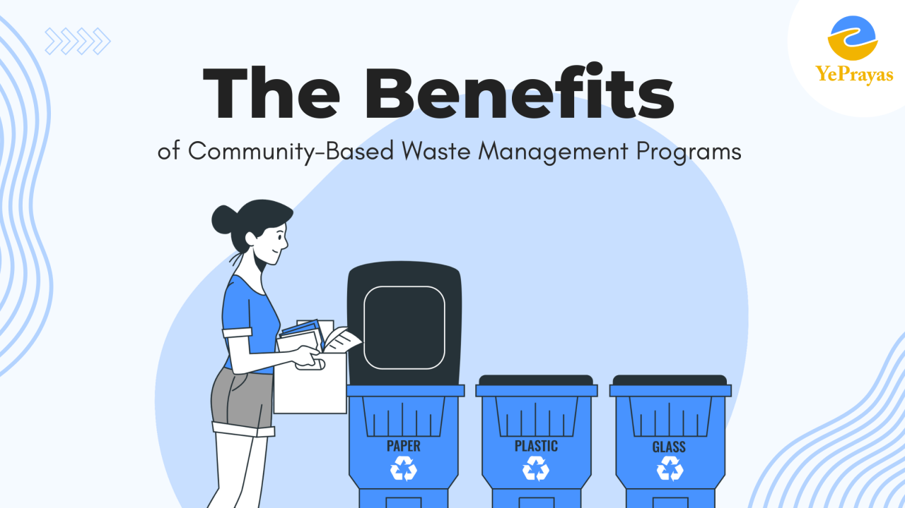

Fig: Maintaining Wastes and Recycling usable Wastes through help of
Community.
ABOUT
Community Waste management or waste disposal includes the processes and
actions required to manage waste from its inception to its final disposal.
Recycling management is the process of planning and controlling how waste
is recycled and disposed of. It includes managing the storage of
recyclable materials, obsolete products, and loading equipment.
OBJECTIVE
Regular waste collection is taken for granted in wealthier parts of the
world, but there are still two billion people living in lower and middle
income countries without this basic service. When there is no such
service, people resort to dumping or burning their waste close to where
they live. These practices are harmful to public health, local economies
and the environment, especially in regions near waterways, which prove to
be a convenient receptacle for urban waste. Plastic packaging waste, for
example, not only blocks drains and pollutes the ocean, but when burned,
is harmful to lungs, eyes and skin, and is a major contributor to urban
air pollution.
ACTIONS AND IMPLEMENTATION
Community-based waste management programs offer populations in low and
middle income countries where there is no, or inadequate, municipal waste
management services with a low-cost, effective and engaging waste
management system. Such systems encourage: Direct community-member
engagement and accountability Tracking of waste collection and reduction
Segregation of waste at the household level On-site utilization of
valuable and reusable items Composting of organic waste Collection and
transportation of waste to a treatment site by a public collection
service.
BENEFITS
1. Localized Solutions:
Community-based waste management allows for tailored solutions that
consider the unique needs and characteristics of each community.
2. Increased Recycling Rates:
Residents are more likely to sort and recycle their waste when they feel a
sense of ownership
in the waste management process. This leads to higher recycling rates and
reduced landfill waste. 3. Job Creation:
Implementing community-based waste management programs often involves the
hiring of local staff for collection, sorting, and recycling activities.
This not only benefits the environment but also contributes to local
economic development by creating employment opportunities. 4. Educational Opportunities:
These programs provide a platform for educational initiatives. Workshops,
seminars, and awareness campaigns can educate community members about the
importance of waste reduction, recycling, and responsible consumption.
5. Improved Public Health:
By effectively managing waste, communities can mitigate health hazards
associated with improper disposal. The reduction of open dumping and
burning of waste helps prevent air and water pollution, safeguarding the
health of residents. 6. Community Engagement and Empowerment:
Involving residents in waste management decisions empowers them to take an
active role in shaping their environment. This sense of responsibility and
engagement fosters a stronger sense of community . 7. Cost Savings for Local Authorities:
Efficient community-based waste management programs can alleviate the
burden on local authorities. Reduced waste collection and disposal costs
free up resources that can be redirected to other essential community
services. 8. Environmental Conservation:
Community-based programs contribute to environmental conservation by
minimizing the environmental impact of waste. By emphasizing reduction,
reuse, and recycling, these programs align with broader sustainability
goals.

CONCLUSION
In conclusion, community-based waste management programs offer a multitude
of benefits for both the community and the planet. These programs provide
localized solutions tailored to the specific needs of each community,
resulting in increased recycling rates, job creation, and educational
opportunities. By effectively managing waste, communities can also improve
public health, engage residents, and empower them to shape their
environment. Moreover, these programs lead to cost savings for local
authorities, contribute to environmental conservation, and promote a
circular economy. Ultimately, successful waste management initiatives
foster a sense of community pride and contribute to a cleaner, healthier,
and more sustainable future for all.